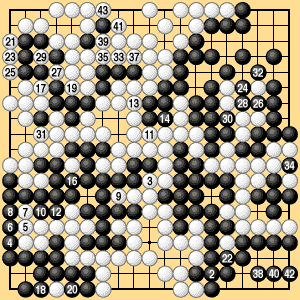
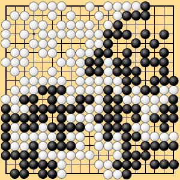

6.8 Thousand-Year Ko (3)
Dias. 6-13-7 and 6-13-8 show the result of playing this game out by area rules III. White wins by seventeen points.

Dia. 6-13-7 (302-343)
pass: 15, 44, 45
36 connects below 34

Dia. 6-13-8